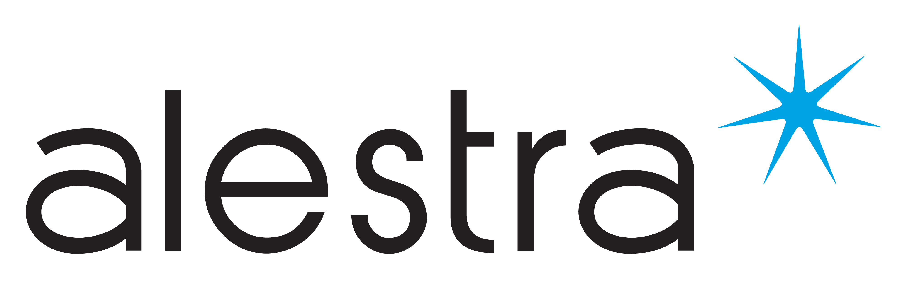

"Del dato a la decisión acelerando el valor del negocio con data e IA"
Evolución Estratégica: Transformamos silos de información en flujos de valor continuo, permitiendo que cada decisión clave sea impulsada por evidencia y no por intuición.
Fuente: Gartner Research 2024
Rentabilidad Directa
Caso: Walmart optimizó inventario en tiempo real.
Velocidad de Respuesta
Caso: Maersk aceleró decisiones de días a horas.
Precisión Operativa
Caso: PepsiCo y BMW eliminaron errores manuales.
"Azure AI Foundry unifica la creación, seguridad y escalabilidad de modelos de IA Generativa. Reducimos la complejidad técnica para que su organización pueda enfocarse en la innovación y el impacto de negocio inmediato."
Implementación de GPT-4 para escala masiva (Caso Klarna).
Modelos predictivos para manufactura (Caso BMW).
Automatización de supply chain y facturación global.
Arquitectura Unificada: Flujo moderno que conecta orígenes con OneLake, eliminando redundancias para decisiones rápidas.
Flujo automatizado de datos: De la ingesta cruda a la visualización estratégica.
Contexto Estratégico: Pipeline que prioriza la escalabilidad, integrando servicios nativos para transformar datos en activos de IA listos para el negocio.
IA Generativa a Escala: Entorno seguro y gobernado para orquestar agentes, LLMs y servicios cognitivos alineados a los objetivos corporativos.
Unified Platform for
Generative AI Models
Usuario de Negocio (Natural Language)
"¿Cuál fue el margen de utilidad por región el último trimestre y qué factores lo afectaron?"
Agent Service + Fabric
"El margen consolidado fue del 18%. El factor principal fue el costo logístico en el Norte. He generado un reporte detallado en Power BI."
En Alestra contamos con los especialistas certificados y la infraestructura necesaria para materializar estas arquitecturas, desde la migración de datos hasta la orquestación de modelos de IA.
Aseguramos que su viaje a la IA sea seguro, gobernado y alineado con las mejores prácticas de ciberseguridad y cumplimiento normativo.
Unifica en Fabric
Potencia con Foundry
Lidera el Futuro
Gracias por su atención.
Alestra + Microsoft Azure